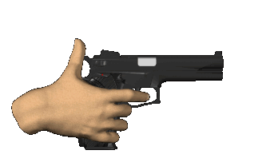
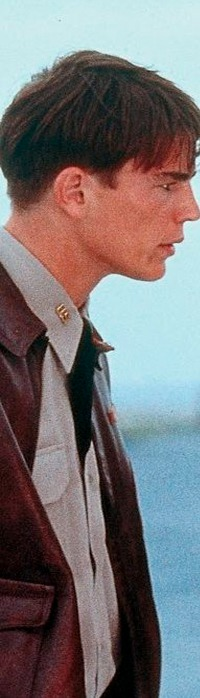
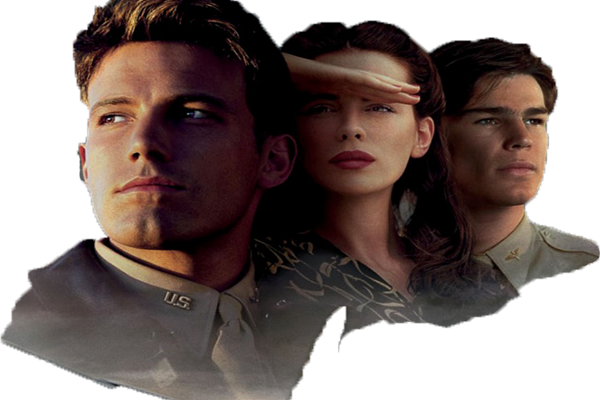

La acción nos sitúa en la Segunda Guerra Mundial; Rafe (Ben Affleck) y Danny (Josh Hartnett) son dos amigos que crecieron y vivieron juntos, además, se formaron a la vez como pilotos en la base de las fuerzas aéreas. Cuando comienza el conflicto con Japon en Pearl Harbor no tienen más remedio que separarse. Por un lado, Rafe es enviado para servir en la Aérea Británica contra los alemanes, y a Danny le destinan a Pearl Harbor, junto a Evelyn (Kate Beckinsale), una guapa enfermera que es novia de su amigo. Michael Bay (Director) se pone al frente al frente de este drama romántico. El reparto artístico lo completan Alec Baldwin, Jennifer Garner, Jaime King, Ewen Bremner y Cuba Gooning Jr.